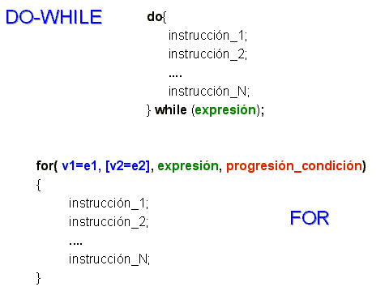
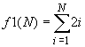
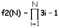

Actividad: Tarea sobre el ciclo while: Estatutos de repetición.
info_outline
Actividad: Tarea sobre el ciclo while: Estatutos de repetición.
Desarrollarás la solución de algunos problemas.
group Modalidad
Individual
check Objetivos de aprendizaje
- Aplicar el ciclo
whileen la solución de problemas.
list Instrucciones
- Desarrolla el algoritmo e impleméntalo en un programa en Python para cada uno de los ejercicios que se presentan a continuación.
- Entrega, en la sección de "Envío de Tareas", los archivos que contengan los programas en C. Es importante que al inicio de cada archivo coloques el o los algoritmos que utilizaste.
- La actividad será evaluada usando la siguiente rubrica.
-
Problemas:
Utiliza el siguiente esquema como apoyo para desarrollar tus soluciones:

-
Ejercicio 1
Desarrolla un programa en C, que incluya las siguientes funciones:
La función f1 que recibe un valor entero mayor o igual a uno; y utilizando un ciclo for regresa el resultado de la siguiente sumatoria:

Por ejemplo:
f1(3) = 2(1) + 2(2) + 2(3) = 12
f1(6) = 2(1) + 2(2) + 2(3) + 2(4) + 2(5) + 2(6) = 42La función f2 que recibe un valor entero mayor o igual a uno; y utilizando un ciclo for regresa el resultado de la siguiente multiplicatoria:

Por ejemplo:
f2(2) = (3(1)-1)*(3(2)-1) = 10
f2(4) = (3(1)-1)*(3(2)-1)*(3(3)-1)*(3(4)-1)= 880La función f3 que recibe un valor entero mayor o igual a uno; y utilizando un ciclo for regresa el resultado de la siguiente serie:
f3 ( n ) = - 1 + 2 - 3 + 4 - 5 + ... n Por ejemplo:
f3( 1 ) = -1
f3( 2 ) = -1 + 2 = 1
f3( 3 ) = -1 + 2 - 3 = -2
f3( 4 ) = -1 + 2 - 3 + 4 = 2El procedimiento f4 que recibe 2 parámetros reales, el limite superior de la serie LS y el limite inferior de la serie LI .Y utilizando un ciclo for, el procedimiento deberá desplegar en pantalla la secuencia de números desde LS hasta el LI en decrementos de 0.4. Por ejemplo:
f4(5.0,3.0), desplegará en pantalla: 5.0, 4.6, 4.2, 3.8, 3.4, 3.0
f4(7.3,3.1), desplegará en pantalla: 7.3, 6.9, 6.5 ........ 3.7, 3.3El procedimiento imprime_6_cada_vez( ), que utilizando un do-while, desplegará en pantalla 6 números consecutivos. Cada 6 números el procedimiento deberá preguntar al usuario si desea continuar, de ser así seguirá con la impresión de la secuencia de números siguientes en pantalla; en caso contrario termina el procedimiento. Por ejemplo:
imprime_6_cada_vez();
desplegará en pantalla lo siguiente:1 2 3 4 5 6
Desea continuar (S/N): S
7 8 9 10 11 12
Desea continuar (S/N): S
13 14 15 16 17 18
Desea continuar (S/N): N
Fin del procedimiento....En el
main()construye un menú que muestre las siguientes opciones:MENÚ
A. Sumatoria
B. Multiplicatoria
C. Serie Alterna
D. Serie en decremento
E. Imprime 6 cada vez
S. Salir
Opción?Utiliza un ciclo
do-whilepara desplegar el menú en pantalla hasta que el usuario seleccione la opción de Salir. Recuerda que la captura de datos y validación de valores debe ser realizada en elmain(), pues las funciones NO pueden realizar las tareas de validación o captura de datos.Nota que las opciones del menú son alfabéticas y el usuario podrá seleccionar la opción del menú presionando la letra mayúscula o minúscula correspondiente.
Incluye el algoritmo como comentario al inicio del programa.
attachmentRecursos
offline_pin Especificaciones de entrega
Los archivos deberán ser entregados a través de la sección de "Envío de Tareas" de Blackboard.